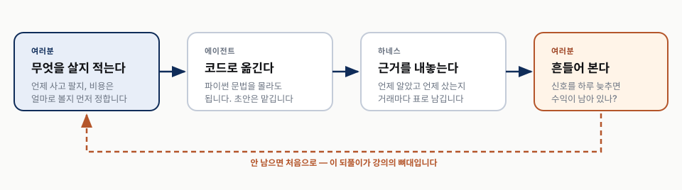
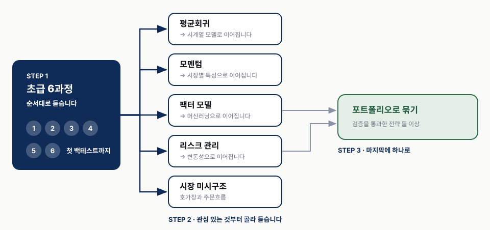
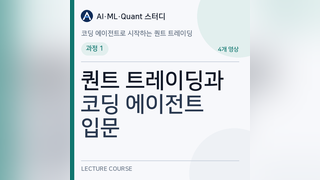
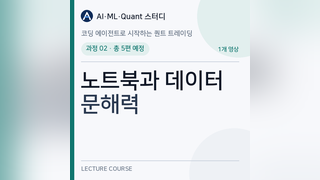

OVERVIEW
코딩 에이전트로 시작하는 퀀트 트레이딩
주식·ETF는 해 봤지만 코드는 처음인 분을 위한 강의입니다. 평균회귀·모멘텀부터 팩터·머신러닝·포트폴리오까지 17개 과정 74편. 코드 초안은 에이전트가 만들고, 여러분은 그 결과를 믿을 근거가 있는지 따집니다.
- 17과정
- 74영상 · 편당 15분 이내
- 무료유료 데이터 사용 안 함
- 한국시장을 중심으로

-
파이썬 문법은 안 가르칩니다
대신 노트북을 실행하고 그 결과를 읽는 법부터 시작합니다. 코드를 쓰는 대신 시키고, 나온 것을 따져 묻습니다.
-
끝나면 스스로 백테스트합니다
미래 데이터가 섞였는지, 비용이 빠졌는지, 잘 나올 때까지 조건을 바꿨는지 직접 점검합니다. 실계좌 운용과 주문 전송은 다루지 않습니다.
-
유료 데이터를 쓰지 않습니다
웹에서 무료로 받는 것만 씁니다. 유료 데이터가 꼭 필요한 주제는 실습 범위를 줄이거나 개념으로만 다룹니다.
-
한국 시장을 중심으로 배웁니다
주식·ETF·선물 실습에 한국 시장 자료를 쓰고, DART 재무제표와 KRX 시가총액·수익률로 교육용 팩터를 직접 구성합니다.
현재 영상 7편을 볼 수 있습니다. 공개된 과정부터 학습을 시작하세요.
- 과정 1 · 퀀트 트레이딩과 코딩 에이전트 입문4 / 4편 공개 · 전체 공개
- 과정 2 · 노트북과 데이터 문해력3 / 5편 공개 · 순차 공개 중
공개 영상의 상세 리포트와 발표자료를 함께 볼 수 있고, 실습이 있는 차시에서는 파일을 내려받을 수 있습니다. 전체 17개 과정·74편 구성으로, 다음 영상과 자료는 준비되는 순서대로 추가합니다.
배우는 순서
초급은 순서대로 듣고, 그다음부터는 관심 있는 주제를 골라 듣습니다

초급 · 첫 백테스트부터 검증까지
과정 6개 · 영상 30편
단순한 투자 규칙을 처음부터 끝까지 백테스트하고, 결과가 믿을 만한지 점검한 뒤 두 종목을 함께 거래하는 전략으로 확장합니다. 여기까지는 순서대로 듣습니다.
-
전체 영상 공개 과정 1

퀀트 트레이딩과 코딩 에이전트 입문
퀀트 트레이딩의 기준부터 코딩 에이전트의 역할, VS Code 실습 환경, 첫 가격 데이터 노트북까지 한 번에 이어지는 입문 과정입니다. 네 편을 마치면 투자 아이디어를 컴퓨터가 확인할 수 있는 규칙으로 정리하고, Codex에 구체적으로 요청해 KODEX 200 데이터를 저장·실행·확인할 수 있습니다.
-
영상 3 / 5편 공개 과정 2

노트북과 데이터 문해력
코딩 에이전트와 노트북을 만들고 실행한 뒤, 받은 주가 표와 그래프를 읽고 날짜와 공개 시각·가격 조정·수급 자료를 차례로 확인합니다. 다섯 편을 마치면 분석에 사용할 자료와 보류할 자료를 데이터 감사표로 설명할 수 있습니다.
-
과정 개요 공개 과정 3
성과를 재는 법
로그수익률, 샤프지수, MDD 와 Calmar 를 계산하고 각각이 언제 거짓말하는지 확인합니다. 증권거래세와 수수료, 슬리피지가 성과를 얼마나 깎는지도 함께 봅니다.
-
과정 개요 공개 과정 4
첫 백테스트 — 규칙 하나로 끝까지
KODEX 200 에 이동평균 규칙 하나를 걸어 명세부터 백테스트까지 끝까지 돌립니다. 신호 시각과 체결 시각을 감사표로 남기고, 열 줄짜리 데이터로 손계산과 대조합니다.
-
과정 개요 공개 과정 5
백테스트를 의심하기
앞에서 만든 KODEX 200 전략을 그대로 감사합니다. 룩어헤드를 미래 구간 절단으로 잡고, 시도 횟수를 원장에 남기고, 워크포워드와 홀드아웃으로 나누고, 반증 테스트를 자동으로 돌립니다.
-
과정 개요 공개 과정 6
페어 트레이딩 — 초급 종합 과제
회귀와 헤지비율을 읽는 것부터 시작해 공적분 페어를 찾고 볼린저 규칙으로 백테스트합니다. 같은 지수를 추종하는 ETF 두 종목으로 절차를 익히고, 보통주·우선주 페어로는 법적 공매도 가능성과 실제 대주 가능 수량이 다르다는 것을 확인합니다.
중급 · 전략의 유형과 수익의 원인
과정 5개 · 영상 20편
가격이 되돌아오는 흐름과 추세를 이용하는 전략을 배우고, 전략의 수익이 시장 전체의 움직임이나 이미 알려진 요인으로 설명되는지 확인합니다.
-
과정 개요 공개 과정 7
평균회귀 제대로
KODEX 200·TIGER 200 스프레드로 반감기를 재고, 스프레드를 만드는 세 가지 방법을 나란히 비교합니다. 볼린저 파라미터와 분할진입 논쟁을 다룬 뒤 섹터 ETF 쌍과 보통주·우선주로 탐색 범위를 넓힙니다.
-
과정 개요 공개 과정 8
모멘텀 제대로
모멘텀이 왜 생기는지부터 시계열·횡단면 모멘텀, 코스피200 선물의 롤리턴까지 다룹니다. 개인·외국인·기관 수급을 팩터로 쓰는 법도 함께 봅니다.
-
과정 개요 공개 과정 9
팩터 모델
내 전략의 수익이 이미 알려진 팩터로 설명되는지 판정합니다. 한국에는 받아 쓸 팩터 파일이 없어 DART 재무제표와 pykrx 시가총액으로 직접 만듭니다 — 팩터가 무엇으로 이뤄지는지 알게 됩니다.
-
과정 개요 공개 과정 10
리스크와 자금관리
코스피200 수익률로 켈리 최적 레버리지를 계산하고, 왜 실무가 그보다 낮게 쓰는지 봅니다. CPPI·스톱로스와 함께 레버리지 ETF 의 변동성 끌림을 확인하고, 한국의 신용·반대매매 구조도 다룹니다.
-
과정 개요 공개 과정 11
시장별 특성 — 주식·ETF·선물
주식 페어의 난제와 ETF 확장, 레버리지·인버스 ETF 의 LP 호가와 괴리율, 지수 차익거래와 시가 갭을 다룹니다. 선물은 코스피200·미국달러·금으로 롤리턴과 캘린더 스프레드를 봅니다.
고급 · 모델과 시장, 포트폴리오
과정 5개 · 영상 21편
통계·머신러닝 모델을 전략에 적용하고, 변동성과 주문·체결 구조를 살펴본 뒤 검증을 통과한 전략을 하나의 포트폴리오로 묶습니다.
-
과정 개요 공개 과정 12
시계열 모델
코스피200 일간 수익률에 AR·ARMA 를 붙여 예측 가능성을 보고, KODEX 200·TIGER 200·코스피200 선물 세 계열로 VAR·VEC 와 Johansen 을 다룹니다. 칼만 필터로 ETF 쌍의 헤지비율을 움직이고, 국내 거래소 BTC·KRW 로 같은 모델을 돌려 봅니다.
-
과정 개요 공개 과정 13
머신러닝을 트레이딩에
코스피200 방향 예측으로 ML 이 금융에서 잘 실패하는 이유부터 확인합니다. 가격과 투자자별 수급을 특징으로 트리 계열을 훑고, HMM 으로 코스피의 급락·회복 국면을 잡습니다.
-
과정 개요 공개 과정 14
변동성
변동성이 왜 군집하고 평균회귀하는지 GARCH 로 봅니다. V-KOSPI200 이 지수일 뿐이라는 점과 코스피200 옵션의 내재변동성·만기 구조를 짚고, 실제로 거래하려면 무엇이 걸리는지 확인합니다.
-
과정 개요 공개 과정 15
시장 미시구조
호가창 불균형과 주문흐름을 읽습니다. 무료 주식 틱이 없어 암호화폐를 교보재로 쓰되, 마지막에 한국 주식시장의 동시호가·가격제한폭·VI 와 무엇이 다른지 대조합니다.
-
과정 개요 공개 과정 16
포트폴리오로 묶기
앞서 검증을 통과한 한국 전략들의 상관을 보고 자본을 배분합니다. 국면이 바뀌었을 때 한국 표본에서 전략이 언제 깨졌는지 확인하고 은퇴 판단을 다룹니다.
마무리 · 다음 단계 안내
과정 1개 · 영상 3편
실전 운용에 필요한 페이퍼 트레이딩, 실행 시스템, 사업·규제의 경계를 살펴봅니다. 계산이 없는 단계이므로 실행 노트북 대신 체크리스트와 사례 워크시트를 제공합니다.
-
과정 개요 공개 과정 17
여기서 실전으로 — 무엇이 더 필요한가
백테스트와 실전의 간극, 실행 시스템과 거래비용을 개념으로 훑고, 남의 돈을 굴리려면 자본시장법상 무엇이 필요한지 짚습니다. 계산이 없으므로 노트북 대신 체크리스트와 워크시트를 남깁니다.
참고 도서
Ernest P. Chan(어니스트 챈)의 아래 세 책을 참고합니다. 관심 있는 주제를 더 깊이 살펴보고 싶을 때 함께 읽어 보세요. 강의에 필요한 설명과 실습 파일은 각 차시에서 제공합니다.
-
퀀트 트레이딩의 출발점
Quantitative Trading
How to Build Your Own Algorithmic Trading Business
제2판 · 2021 · Wiley · 영문
전략 아이디어를 찾고 백테스트로 점검하는 과정부터 자금·위험 관리까지 살펴봅니다. 퀀트 트레이딩의 전체 흐름을 이해하고 싶을 때 참고하기 좋습니다.
-
평균회귀와 모멘텀 전략
Algorithmic Trading
Winning Strategies and Their Rationale
2013 · Wiley · 영문
평균회귀와 모멘텀 전략이 작동하는 이유, 검증 방법과 구현 사례를 다룹니다. 강의에서 배운 전략의 가정과 실패 조건을 더 살펴볼 때 참고할 수 있습니다.
-
모델과 시장 구조로 확장하기
Machine Trading
Deploying Computer Algorithms to Conquer the Markets
2017 · Wiley · 영문
팩터 모델, 시계열 분석, 인공지능 기법과 시장 미시구조로 주제를 넓힙니다. 중급·고급 과정에서 관심이 생긴 모델을 깊이 공부할 때 참고할 수 있습니다.
강의에서 참고한 판본 기준으로 안내합니다. 도서의 상세 정보와 다른 판본은 아마존 링크에서 확인할 수 있습니다.